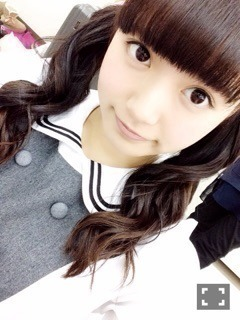
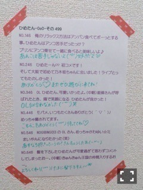
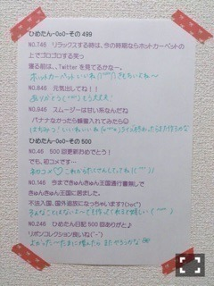

| 2015/02 18 Wed | ひめたん-OoO-その522 |
日曜日は京都で
アルバムスペシャル握手会でした！
来てくれたみなさんありがとう♡
乃木坂ちゃん遠征にしては
珍しく晴れた（ ˆoˆ ）
1部 ガールズルール
2部 あの日 僕は咄嗟に嘘をついた
写メ撮るの忘れた( >_< )ごめんにゃ
3部 春のメロディー
あすかりんが撮ってくれたよ～＊
京都は今年初めての握手会
久々だったけれど
顔見てお話できて楽しかった♡
ライブ行くよ～てひとが
たくさんいらっしゃって
西日本からは会場遠いのに
いつもありがとうね( ´•̥ω•̥` )
また西日本でもライブができるように
頑張るから、その時まで待っててね
西武ドームがんばります！
さらにのぎ天生配信もありました
生配信ははじめてだったけれど
楽しかったなあ( ˇωˇ )
観てくださったみなさん
ありがとう！
おたよりもたくさん！嬉しい！
また機会があったらやりたいです
来週もお楽しみに～＊

てことで、
ライブ本番が近いので
みんなで予習をしましょう( ˆoˆ )
ひめたん愛してるよ～ってひとは
ぴんく
×
ぴんく
の
サイリウムを振ってくれると
嬉しいなって思います♡
うちわやボードなんかも
あ、ひめたん推しなのかな？♡って
すぐ見つけちゃうから
もしよかったら( ˇωˇ )
タオルやTシャツもぜひ。
そして、本当に
寒いみたいなので
防寒はしっかりとよろしくお願いします
ライブで風邪引いたよ～とかなったら
悲しいからね( >_< )
天気が悪くなったり
夜になっても大丈夫なように
あったかくして来てね☆
ライブの前日はよく寝てね～
たくさんの元気なコールを
聞かせてください（ ˆoˆ ）
去年みたいに
今年もお手洗い休憩中にも
何かあるかもないかも。
あ、それとそれと
3周年記念メールを期間限定で
配信しています⊂( ˆoˆ )⊃
真夏、みおちゃん、かりん、私が
ライブに向けて頑張ってる
みんなの様子をレポートしてるよ～
詳しくは公式サイトを
チェックしてみてね！
最後に、新制服解禁☆



 ひめたんの好きな
ひめたんの好きな
卵料理はなんですか？
卵とチーズの組み合わせがすき。
オムライス、フレンチトースト！
ひめたんはチョコ食べる時に、
舐める派？噛んじゃう派？
どっちですか～？
噛んじゃう( >_< )
飴ちゃんも噛んじゃう。
私最近半身浴してるんだけど
半身浴中にやることなくて暇なの(笑)
だから、おすすめのやること
教えてください♡
防水のスピーカー持ち込んで
お風呂で音楽聴いてるよ( ˇωˇ )
たまに本とかも。
よかったらやってみてね！
毎日欠かさずやっていることなど
あれば教えてください！
最近は顔とか脚のマッサージ☆
ひめたんの日記の
コメント欄下２ケタに46を踏んだ方へ
手書きでコメ返するコーナー
＼ ひめたん46 ／



いつもたくさんのコメント
ありがとうございます
11th制作が落ち着いて
この一週間はライブの追い込み。
もうすぐでデビュー3周年なんだな
たくさんの方への感謝の気持ちを
ライブで伝えたいと思います！
(＊´・ω・＊)
コメント(1273)
2015/02/18 23:30